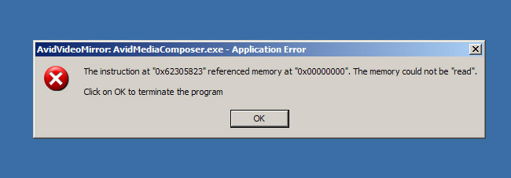
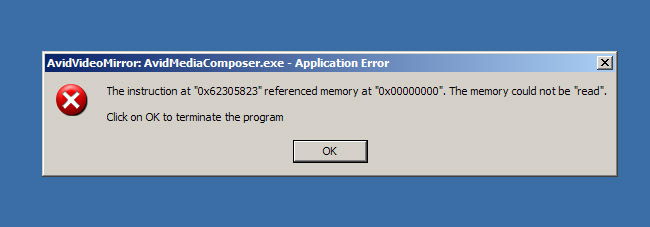

// main is the entry point
fn main() {
// create a variable
let who = "World";
// run the print macro
println!("Hello {}!", who);
}
// main is the entry point
fn main() {
println!("The sum is {}", sum(4,5));
}
// function called on main
fn sum(x: i32, y: i32) -> i32{
x + y
}
fn main() {
let mut i = 5u32;
loop {
i += 1;
println!("{}", i);
if i > 10 { break; }
}
}